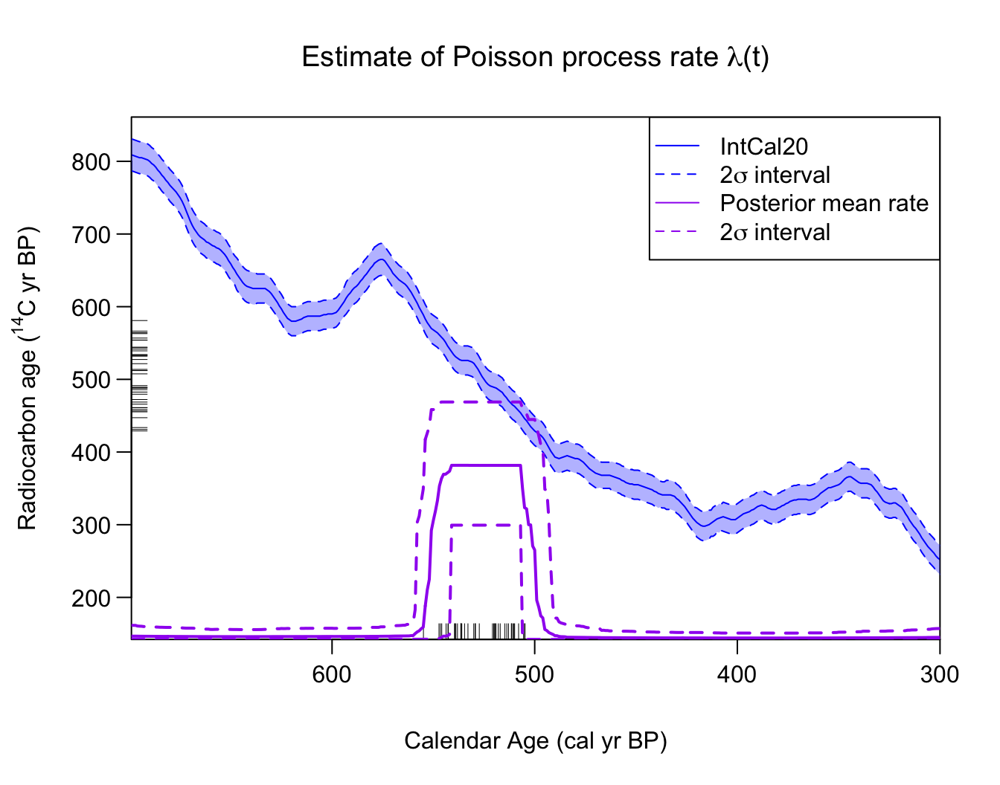
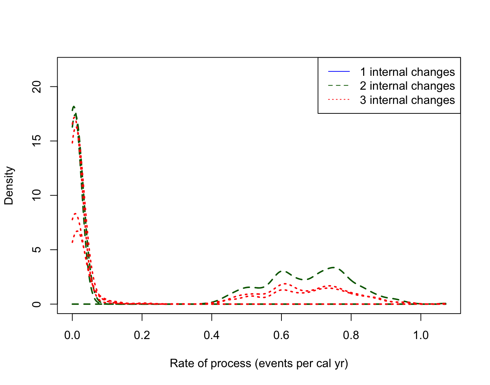

Poisson Process Modelling
Source:vignettes/Poisson-process-modelling.Rmd
Poisson-process-modelling.RmdIntroduction
This component of the library allows you to model (and estimate) the
occurrence of radiocarbon samples as a variable-rate (inhomogeneous)
Poisson process. This is done using the function
PPcalibrate. The aim of this function is primarily to allow
a user to estimate the variable (calendar year) rate at which a set of
radiocarbon samples are observed, and identify changepoints in that
rate.
This Poisson process model can also be used in a “dates-as-data” approach (Rick 1987) to provide a proxy for changes in population or activity, dependent upon the representativeness of the underlying sampling. For this method, the estimated rate of the Poisson process provides the proxy.
Modelling Ideas
Suppose we have a series of \(n\) events, which occur at calendar times \(\{\theta_i, i= 1,\ldots,n \}\) cal yr BP. Each event is assumed to result in the generation of a radiocarbon sample, \(\{ X_i, i= 1,\ldots,n \}\). Examples of events might be:
- death of an animal (which leaves a bone)
- creation of a cave painting (which leaves a painting)
- construction of a settlement (which leaves a farmstead)
- a palaeofire (which leaves behind charcoal)
We model the occurrence of these events as random and aim to investigate whether, and how, the rate at which they occur varies over calendar time.
Specifically, we assume that the events occur according to a Poisson Process with a variable rate \(\lambda(t)\). This rate \(\lambda(t)\) is considered piecewise-constant, but changes an unknown number of times and at unknown calendar ages. We aim to estimate \(\lambda(t)\) and hence infer how the rate at which the events occur changes over calendar time. Time periods where the rate \(\lambda(t)\) is high will typically be expected to generate a greater number of events (perhaps since there is more activity, or a greater population, at the site/sites); while periods when the rate \(\lambda(t)\) is lower (perhaps due to lower activity at the site/sites) will be expected to have fewer events.
When the calendar ages of the events \(\{\theta_i , i=1,\ldots,n\}\) are known exactly, estimation of the variable rate \(\lambda(t)\) can be tackled directly via reversible jump Markov Chain Monte Carlo (RJ-MCMC) (Green 1995). However, when we only observe the radiocarbon ages of the samples (\(\{ X_i, i= 1,\ldots,n \}\)) the underlying calendar ages \(\theta_i\) are uncertain and must be estimated via radiocarbon calibration. This complicates the process of estimating \(\lambda(t)\) especially as the calibration must be done simultaneously to its estimation (as the modelling will influence the set of \(\theta_i\) and vice versa). In this library, we provide a rigorous approach to the estimation of \(\lambda(t)\).
![_Modelling sample occurence using a Poisson process with a latent occurence/activity rate. Left Panel: An illustration of a Poisson process with two changepoints in the occurrence rate. The samples (shown as a rug in purple) occur at random calendar times, but proportional to the underlying occurrence rate. There are therefore more samples between (2700, 2300) cal yr BP than other times. Right Panel: Each sample has a ^14^C age (shown as black ticks on the y-axis). We wish to reconstruct the underlying Poisson process rate given only these ^14^C determination._](Poisson-process-modelling_files/figure-html/illustrate_PP-1.png)
Modelling sample occurence using a Poisson process with a latent occurence/activity rate. Left Panel: An illustration of a Poisson process with two changepoints in the occurrence rate. The samples (shown as a rug in purple) occur at random calendar times, but proportional to the underlying occurrence rate. There are therefore more samples between (2700, 2300) cal yr BP than other times. Right Panel: Each sample has a 14C age (shown as black ticks on the y-axis). We wish to reconstruct the underlying Poisson process rate given only these 14C determination.
An Inhomogeneous Poisson process
A Poisson process is a common statistical process used to model the occurrence of random events. It is described by specifying the random variables \(N(s,t)\) for \(0 \leq s \leq t\), where \(N(s,t)\) represents the number of events that have occurred in the time interval \((s,t]\). Any Poisson process has a parameter \(\lambda(t)\), known as the rate of the process. This controls the expected number of events in a particular time interval.
In the case of an inhomogeneous Poisson process, the rate \(\lambda(t)\) varies over time so that some time periods are expected to have a greater number of event than others. An (inhomogeneous) Poisson process is then defined by the following two properties:
- For any \(0 \leq s \leq t\), the distribution of \(N(s,t)\) is Poisson with parameter \(\int_{\theta = s}^t \lambda(\theta) d\theta\).
- If \((s_1,t_1] , (s_2,t_2 ], \ldots ,(s_n,t_n]\) are disjoint intervals (i.e., non-overlapping) then \(N(s_1,t_1),N(s_2,t_2 ),\ldots ,N(s_n,t_n)\) are independent random variables.
In particular, the first of these properties implies that the expected number of events in a specific time interval \((s,t]\) is \(\int_{\theta = s}^t \lambda(\theta) d\theta\). Hence time periods with higher rates \(\lambda(t)\) will be expected to have greater number of events. The second implies that, conditional on the rate \(\lambda(t)\), the number of events that have occurred in one time period is not affected by the number of events in a different, and non-overlapping time period. It also implies that events are not clustered beyond the effect of the variable rate, e.g., the occurrence of one event does not increase/decrease the probability that another event occurs shortly afterwards. Note that this last assumption is quite strong as clustering might occur in many instances, for example if the animal bones you date all result from the hunting of a single (short-lived) group of individuals, or you date multiple buildings in a settlement.
Final Radiocarbon Model
Given a set of multiple \(^{14}\)C
samples, \[X_1, \ldots, X_n\] the
function PPcalibrate will simultaneously:
- calibrate them to provide posterior calendar ages estimates \(\theta_1, \ldots, \theta_n\)
- estimate the rate \(\lambda(t)\) of the underlying process. This estimate \(\hat{\lambda}(t)\) may provide a useful proxy to make archaeological and/or environmental inference, e.g., to model changes in culture, or useage, or population size over time.
The (calendar) rate at which the samples occur is modelled as a Poisson process with a variable rate \(\lambda(t)\). Specifically, \(\lambda(t)\) is modelled as a piecewise constant function with an unknown number of changepoints: \[ \lambda(t) = \left\{ \begin{array}{ll} h_i \quad & \textrm{if } s_i \leq t < s_{i+1} \\ 0 & \textrm{otherwise} \end{array} \right. \] where \(T_A < s_1 < s_2 < \ldots < s_k < T_B\) are the calendar ages at which there are changes in the Poisson process rate, and \(T_A\) and \(T_B\) are bounding calendar ages. We use reversible jump MCMC (RJMCMC) to alternate between calibrating the samples and updating the estimate of the underlying rate lambda.
Example
This is a basic example which shows you how to solve a common problem. In this simulated example, we will assume that the events (samples) can must lie within the calendar period from [700, 300] cal yr BP. Within this period, we will create 40 artificial samples with \(^{14}\)C determinations corresponding to the (narrower) calendar period from [550, 500] cal yr BP. Effectively, the underlying model is a Poisson process with a rate \[ \lambda(t) \left\{ \begin{array}{ll} h_1 = 0 & \textrm{if } 300 \leq t < 500 \textrm{ cal yr BP} \\ h_2 \qquad & \textrm{if } 500 \leq t < 550 \textrm{ cal yr BP}\\ h_3 = 0 & \textrm{if } 550 \leq t < 700 \textrm{ cal yr BP} \end{array} \right. \] We will then investigate if we can reconstruct this underlying information, from just the \(^{14}\)C values, if we only knew that the calendar ages of the samples lay between the bounding [700, 300] cal yr BP.
set.seed(15)
# Set initial values
n_observed <- 40
rc_sigmas <- rep(15, n_observed)
# Create artificial rc_determinations
calendar_age_range <- c(300, 700)
observed_age_range <- c(500, 550)
true_theta <- seq(
from = observed_age_range[1],
to = observed_age_range[2],
length = n_observed)
intcal_mean <- approx(
x = intcal20$calendar_age_BP,
y = intcal20$c14_age,
xout = true_theta)$y
intcal_sd <- approx(
x = intcal20$calendar_age_BP,
y = intcal20$c14_sig,
xout = true_theta)$y
rc_determinations <- rnorm(
n = n_observed,
mean = intcal_mean,
sd = sqrt(rc_sigmas^2 + intcal_sd^2))
# Fit the model
PP_fit_output <- PPcalibrate(
rc_determinations = rc_determinations,
rc_sigmas = rc_sigmas,
calibration_curve = intcal20,
calendar_age_range = calendar_age_range,
calendar_grid_resolution = 1,
n_iter = 1e5,
n_thin = 10,
show_progress = FALSE)This creates an object PP_fit_output which you can
access directly or use the in-built plotting functions.
Plotting the posterior estimate of the occurrence rate
To plot the posterior estimate of \(\lambda(t)\) you should use the in-built function:
PlotPosteriorMeanRate(PP_fit_output)
This plots the posterior mean rate of sample occurrence (shown in purple). The \(^{14}\)C determinations (\(X_1, \ldots, X_n\)) are shown on the y-axis as a rug. The rug on the x-axis plots the posterior mean of the corresponding calendar ages (i.e., \(\theta_1, \ldots, \theta_n\)) after calibration for illustration purposes. Note: In some cases (in particular when an individual calibrated age estimates \(\theta_i\) is bimodal) the posterior calendar mean will not be a good summary.
As you can see, the posterior estimate of \(\lambda(t)\) identifies the calendar period from which the hypothetical samples have been created [550, 500] cal yr BP. Here, \(\hat{\lambda}(t)\) is non-zero, while for the other time periods the rate (correctly) drops to near zero.
Plotting the estimated number of changepoints
You can plot the posterior estimate for the number of internal changes in the rate \(\lambda(t)\) using the command:
PlotNumberOfInternalChanges(PP_fit_output)
Here, we can see that the method estimates that there are most likely to be two changes. Again, this corresponds to the underlying (simulated) data, where there is a step up from a occurrence rate of zero samples/cal yr to a rate of ca. 0.8 samples/cal yr at 550 cal yr BP, and then a step back down to return to a sample occurrence rate of zero at 500 cal yr BP.
Plotting estimates of changepoint locations
You can also plot density estimates for the locations (calendar times) of the changepoints in \(\lambda(t)\), conditional on the number of such changes. The default shows the density estimates for the calendar times at which there are changes in the occurrence rate, conditional on their being \(n_{\textrm{internal changes}} = 1, 2,\) and \(3\) such changes in \(\lambda(t)\) over the time period under study.
PlotPosteriorChangePoints(PP_fit_output)
#> Warning in PlotPosteriorChangePoints(PP_fit_output): No posterior samples with
#> 1 internal changesThis figure can be interpreted as follows. For example, if the model thinks there are only two changepoints in the underlying occurrence rate of the samples, then these changepoints should be located around 500 cal yr BP and 550 cal yr BP (the two distinct dashed density estimates shown in dark green). If the model thinks there are three changepoints in the rate, then these should be located according to the location shown by the dotted red densities (note that here these three locations overlay one another, effectively adding a double changepoint at either 500 or 550 cal yr BP).
The information contained in this plot should be combined with that
in PlotNumberOfInternalChanges which indicates that the
most likely number of changepoints is two. We may therefore wish to
focus our interpretation on the locations/times of changepoints
conditional on their being this number (i.e., when \(n_{\textrm{internal changes}} = 2\)).
Note the R warning here: For this simulated data, the posterior model (correctly) never thinks there should be only one changepoint. This is indicated by the warning message returned by R and the absence of a solid blue density in the plot.
Plotting estimates of occurrence rate
You can also plot, conditional on the number of changes in the rate step function \(\lambda(t)\), the posterior density estimates for the heights in each of the individual segments (i.e., the rates of sample occurrence in those constant periods)
PlotPosteriorHeights(PP_fit_output)
#> Warning in PlotPosteriorHeights(PP_fit_output): No posterior samples with 1
#> internal changes
Here, conditional on there being two changes in \(\lambda(t)\) between 700–300 cal yr BP (so three different values for the rates) we have two rates of ca. 0 events per cal yr (these correspond to the periods 700–550 and 500–300 cal yr BP), and a period with rate ca. 0.6-0.8 events per cal yr (corresponding to the period from 550–500 cal yr BP).
Plotting the posterior calendar age estimates of individual samples
Finally, it is again possible to plot the posterior calendar age
estimates of and individual samples using the
PlotCalendarAgeDensityIndividualSample function:
PlotCalendarAgeDensityIndividualSample(
9, PP_fit_output, show_hpd_ranges = TRUE, show_unmodelled_density = TRUE)Changing the calendar age plotting scale
As elsewhere in the library, the calendar age scale (cal yr BP, cal
AD, or cal BC) shown when plotting can be selected via the
plot_cal_age_scale variable within the relevant functions.
In the case of the Poisson process modelling, the calendar age scale can
be set in PlotPosteriorMeanRate and
PlotPosteriorChangePoints, e.g.,
PlotPosteriorChangePoints(PP_fit_output,
plot_cal_age_scale = "AD")
#> Warning in PlotPosteriorChangePoints(PP_fit_output, plot_cal_age_scale = "AD"):
#> No posterior samples with 1 internal changes